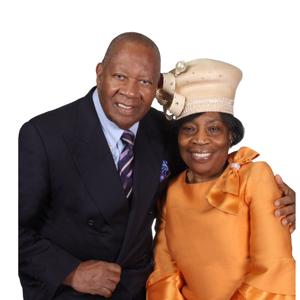

Meet Our Leaders
The pastors leading Gospel Assembly Church.
Leadership
Our Pastors & Leadership

Bishop Lloyd G. Blake
Founding Pastor & BishopLeading Gospel Assembly Church since 1988 — “Reach, Teach and Win; our Goals are Souls!” Read his full story ↑
Pastor Colville E. Webb Jr. & Mnsy Eronica Webb
Pastor, Mount Vernon Campus“Your seat is ready.” Read their welcome message ↑
Pastor Joshua Brooks
Pastor, Williamsbridge CampusPLACEHOLDER — add a short bio for Pastor Brooks.
Pastor Liston England
Pastor, Lithonia CampusPLACEHOLDER — add a short bio for Pastor England.
Pastor Osburne
Pastor, BVI CampusPLACEHOLDER — add a short bio for Pastor Osburne.
Over 30 Years of Service
Meet Our Bishop
The Man and the Mission
Bishop Lloyd G. Blake was born in St. Elizabeth, Jamaica. He accepted Christ at the young age of 14. After graduating from Mico Teachers College, he taught for a short time at Christian High School, Manchester, before migrating to the United States, where he married his friend, Carrol Miller.
Together they travelled to Brooklyn for several years to attend the Gospel Tabernacle Church, where they grew under the tutelage of the late Bishop Samuel Green. In God’s perfect time, he became an Assistant Pastor, after which he was promoted to pastoring his first church in 1988 in the Bronx. During this time, he studied and graduated from Fordham University (Rose Hill Campus) with a Bachelor’s Degree in Business Administration and Marketing Management.
He began church with 8 brethren, but soon outgrew the small space they occupied. Bishop Blake and the saints purchased the Bronxwood property in 1996. Shortly after, the prophecy went forth that our church would become a multi-cultural/national church. We experienced God’s promise when, in a short space of time, we started a ministry in Lithonia, Georgia, in a building that was fully paid off. Not long after, we responded to the Macedonian call from Tortola, BVI, where a daughter work was started under the leadership of the visionary Bishop Blake.
The growth continued, and after much prayer and fasting, the decision was made to buy and relocate to a 500-plus-seat sanctuary in Mount Vernon.
The vision of our Bishop is still not complete. He is still looking at areas that need the Word of God, so that a plentiful harvest can be reaped. Bishop Blake still stands by our motto, “Reach, Teach and Win; our Goals are Souls!”
Mount Vernon Campus
Welcome Home!
A Word from Pastor Colville E. Webb Jr. & Mnsy Eronica Webb
There is something powerful about the fact that you are here.
You didn’t stumble onto this page by accident. We believe with everything in us that God has been ordering your steps — and those steps have led you right here, to this moment, to this place, to this family. That is not coincidence. That is divine appointment.
On behalf of Mnsy Eronica Webb and the entire Gospel Assembly Church family — we want you to know that you are not just welcome here. You are expected here. We saved a seat for you. Not just a seat in our sanctuary, but a seat at the table of purpose, of community, of belonging, of transformation. A seat where your life will never be the same.
We are a church that believes God is still speaking, still healing, still delivering, still restoring. Whatever you are carrying when you walk through our doors — a broken heart, an unanswered prayer, a hunger for something real — you have come to the right place. We don’t do church for show. We do life together, in the power of the Holy Ghost, with love that is genuine and a Word that will set you free.
So come as you are. Come expectant. Come ready. Because we have been praying for you — yes, you — and we cannot wait to meet you.
The best days of your life are not behind you. They are waiting for you right here.
We will see you soon. Your seat is ready.
With love and anticipation,
Pastor Colville E. Webb Jr. & Mnsy Eronica Webb
Gospel Assembly Church — Mount Vernon